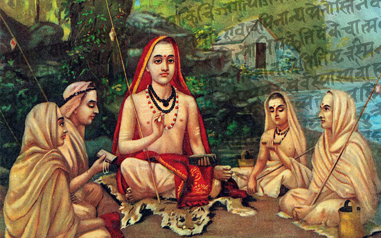

Short Stories from the Upanishads
The Upanishads are a collection of ancient Hindu scriptures that form the philosophical and
spiritual foundation of Hinduism. They are part of the Vedas, which are the oldest and most
sacred texts of Hinduism, and are considered to be among the most important works of Indian
philosophy.
The Upanishads were composed over a period of several centuries, beginning around 800 BCE and continuing until the early centuries CE. They were transmitted orally for many centuries before being written down, and were preserved through a system of memorization and recitation by scholars known as the Brahmins.
Today, the Upanishads continue to be a source of spiritual and philosophical insight for millions of people around the world, and have influenced the development of many other religions and spiritual traditions.

The Upanishads
The Upanishads are a series of conversations between teachers and students, in which they discuss the nature of reality, the self, and the ultimate goal of human life. They explore various spiritual and metaphysical concepts, including the nature of Brahman (the ultimate reality), Atman (the individual soul), karma (the law of cause and effect), and moksha (liberation from the cycle of birth and death).The Upanishads were composed over a period of several centuries, beginning around 800 BCE and continuing until the early centuries CE. They were transmitted orally for many centuries before being written down, and were preserved through a system of memorization and recitation by scholars known as the Brahmins.
Today, the Upanishads continue to be a source of spiritual and philosophical insight for millions of people around the world, and have influenced the development of many other religions and spiritual traditions.